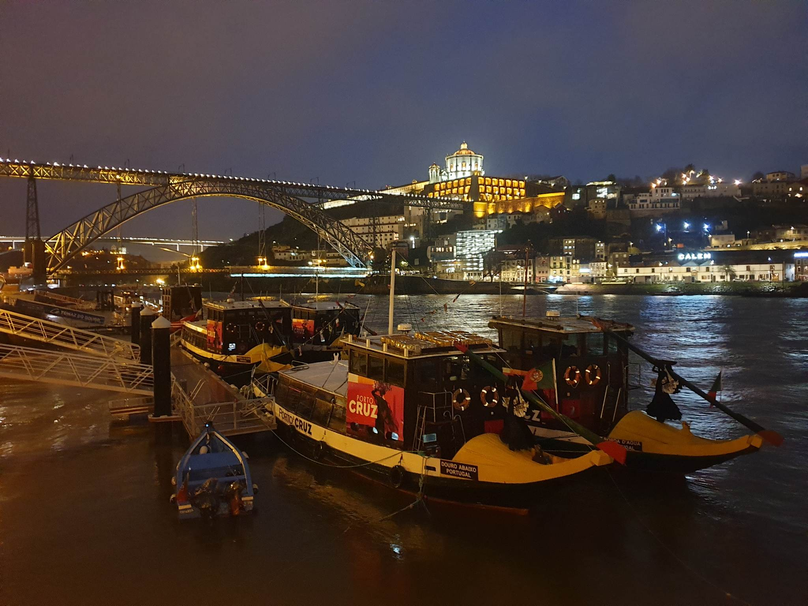
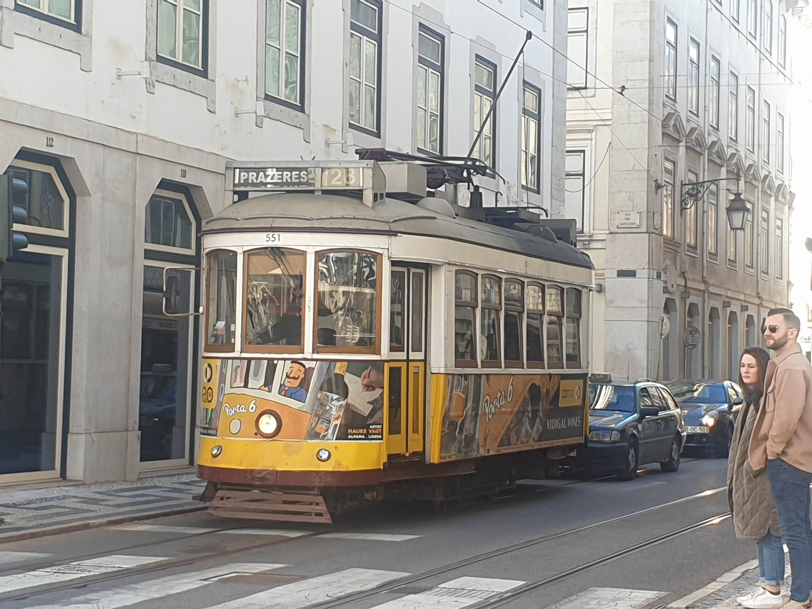
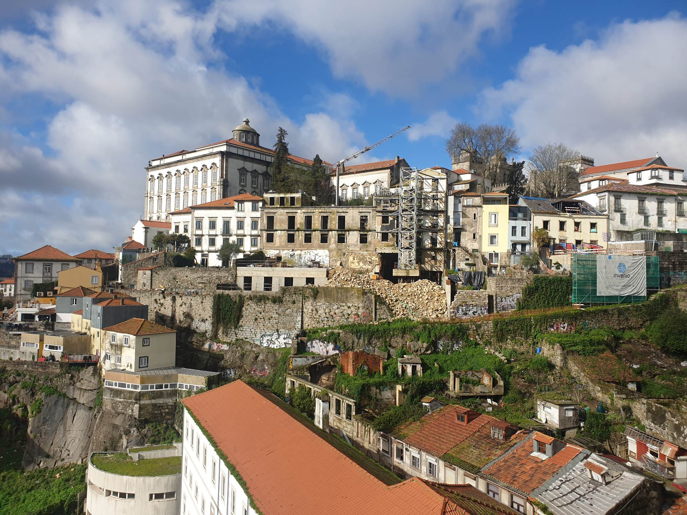
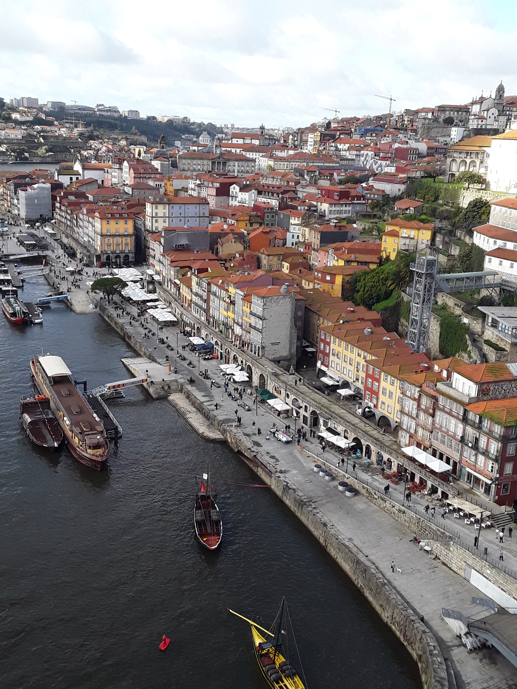

Il est un pays, à la lisière de l’Europe, où le continent s’arrête pour laisser place à l’immensité de l’Atlantique. Ce pays, c'est le Portugal. Un jardin posé sur l’océan, une terre qui ne ressemble à aucune autre, car elle a su transformer sa position de « bout du monde » en une invitation perpétuelle au voyage.
Une Palette de Couleurs Infinie. Le Portugal est une œuvre d'art à ciel ouvert. Voyager du Nord au Sud, c'est voir le monde changer de couleur : Le Vert profond du Minho, où les vignes grimpent vers le ciel pour donner ce vinho verde si frais. Le Bleu et Blanc des Azulejos, ces carreaux de céramique qui racontent l'histoire du pays sur les murs des églises, des gares et des maisons modestes.
C'est une particularité fascinante du Portugal : bien que sa superficie soit modeste, son étirement le long de la côte atlantique lui offre un condensé de paysages que l'on ne retrouve nulle part ailleurs en Europe sur une si petite distance.
On imagine souvent le Portugal comme une terre de soleil et de plages. Mais pour celui qui prend la route et descend du Nord vers le Sud, le Portugal se révèle être bien plus que cela : c'est un kaléidoscope climatique et géographique.
Tout commence dans le Minho, au Nord. Ici, le Portugal est vert. C'est une terre de brumes, de pluies et de montagnes escarpées. Les vignes de Vinho Verde grimpent le long des arbres, et les maisons sont bâties dans un granit gris et solide.
En descendant vers le sud, le paysage se transforme. On rencontre la Serra da Estrela, le toit du pays, où la neige couronne les sommets en hiver. C’est une zone de transition, où les forêts de pins laissent place aux oliviers. C'est ici que bat le cœur intellectuel à Coimbra, et où les vagues géantes de Nazaré rappellent que l'océan est le seul véritable maître du paysage.



Petit voyage qui nous a fait traverser plusieurs frontieres, Andoranes, Espagnoles et arriver par le Nord du Portugal avec comme objectif Porto et la descente plus au sud vers Lisbonne et éventuellement l'Algarve (que nous n'atteindrons pas par manque de temps)